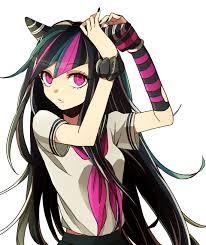
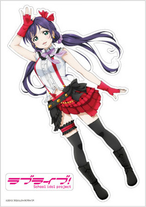
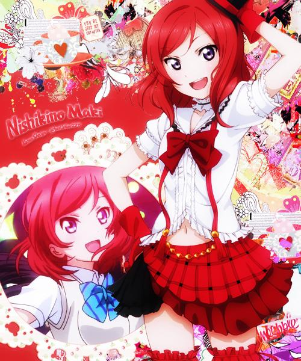
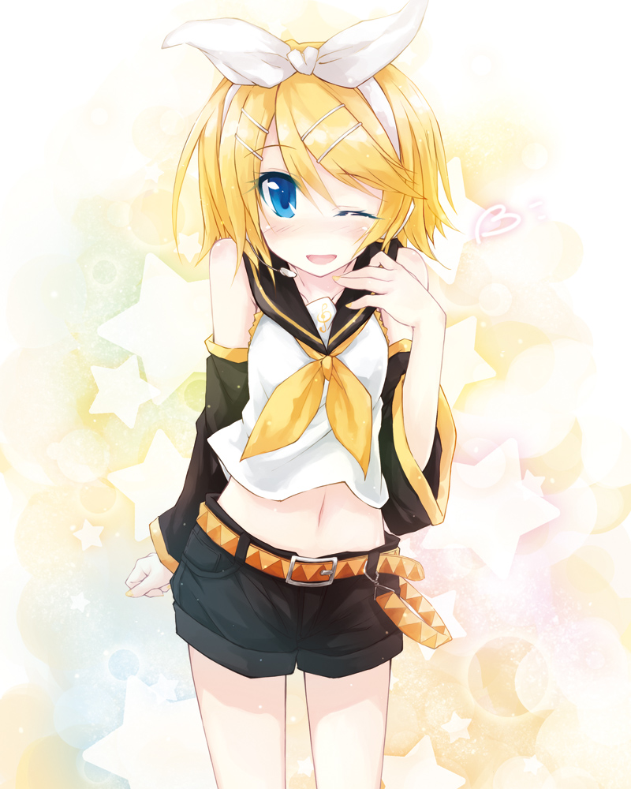
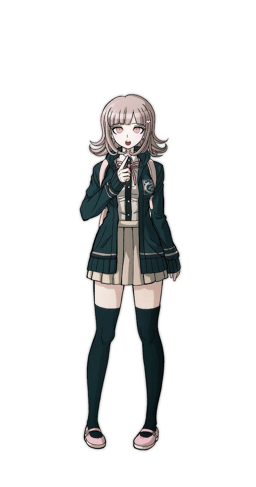
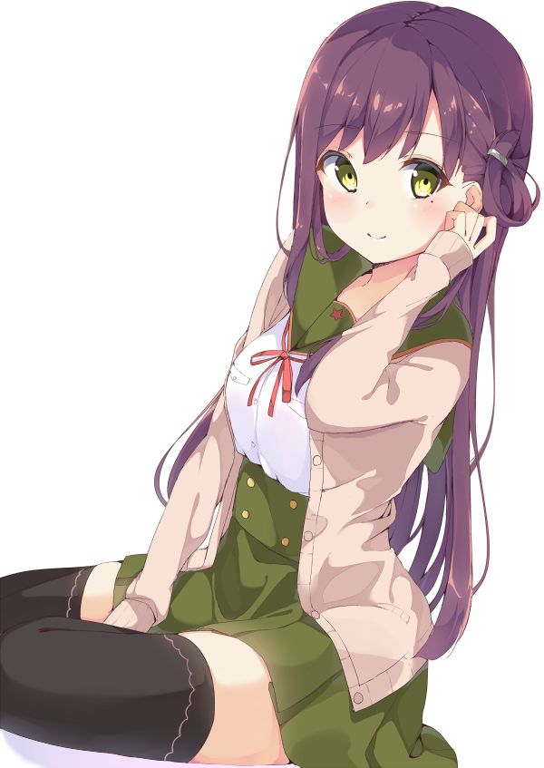

This is a list consisting of the waifus I've grown to love and appreciate over years of anylasis.
So, this little ball of sunshine is going first on my list because she is the cutes thing evar. Not only that, but she is my gamertag for all of the games I play. She's from the second DanganRonpa game. The energy she adds to the plot is a nice refresher to stay positive, even in the most dire of situation!
Next on the list is Nozomi! She's from "Love Live!" an anime about nine girls trying to save their school from closing by becoming school idols. She made it on my list because of the welcoming feeling she gives off. Before I even watched the anime, I downloaded the game on my phone. I couldn't choose between her and another girl on this page (Hint: She's right below her)...
Now here's Maki! She's from the same anime as Nozomi, and she's a tsundere (Hint: Tsundere is a personality that is common in anime. The person pretens to be hateful toward a certain person or group of people, but eventually become more friendly over time). It sounds weird but I'm drawn to these people... I know, they're bad for me, but I can't help myself! She's too cute!
Next is another singer (just not a real one)! She's a vocaloid. Technically, she doen't have a set "personality" but she's cute. But, they do give vocaloids a favoorite food a her's is bananas. And she has a wide variety of music, so if you listen to every song that has ever been produced with her voice, you are probably gonna like at least one of the beats to her music.
Alright, we're done with music rounded waifus. Now back to your regularly scheduled crime/mystery game/anime. Chiaki is from Danganronpa 2, just like Ibuki. She takes charge of the group after the first leader is killed in the game. And her talent, the Ultimate Gamer, maker her even more likeable in the fanbase. Too bad the producers of this game like to break hearts...
Last but not least, we've got Yuri. She's from School Live. A "cheerful & jolly" anime that I recommend to anyone who likes to see cute girls do cute things... Okay I, lied. This is the Walking Dead if it were an anime full of girls. BRACE YOURSELF FOR HEARTBREAK IF YOU WATCH THIS! She's the "mother" of the group and the president of the "School Living Club". Her softness is one of the things I love about her!
